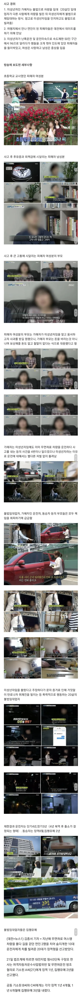

또한 지난 2019년 첫 데이트를 하던 연인을 치어 여교사를 숨지게 한
일명 '대전 머스탱 교통사고'의 피의자 역시 해당 조직에 가담한 것으로 알려졌습니다.
경찰은 총책 A 씨 등 조직원들의 특정하고 신병 확보에 주력할 방침입니다.
[단독] 경찰, 캄보디아 로맨스 스캠 조직 '셀허브' 수사…조직원 의혹 증폭
가해자는 출소후 캄보디아 스캠 조직으로가서 활동

또한 지난 2019년 첫 데이트를 하던 연인을 치어 여교사를 숨지게 한
일명 '대전 머스탱 교통사고'의 피의자 역시 해당 조직에 가담한 것으로 알려졌습니다.
경찰은 총책 A 씨 등 조직원들의 특정하고 신병 확보에 주력할 방침입니다.
[단독] 경찰, 캄보디아 로맨스 스캠 조직 '셀허브' 수사…조직원 의혹 증폭
가해자는 출소후 캄보디아 스캠 조직으로가서 활동
교화는 니미 ㅋㅋㅋㅋ 그냥 어딜가서 나 감방다녀와본 사람이야 라고 이력으로 만들어줬네
캄보디아가서 마약 빨면서 사람 죽여봤다고 가오 ㅈㄴ 잡고 있을듯
임대업자는 왜 집유여??
반성문으로 판사님 똥구멍 왁싱해드렸나보지
사실 그 이상의 죄를 묻기에도 애매하지 않냐? 사람 죽일테니 차 빌려줘 해서 빌려준 것도 아니고.. 미성년자인거 알고 렌트해준거만으론 초범이라면 집유가 맞을듯
사적제재
전과 3범 부터는 교화의 가능성이 없다 ㅇㅇ
그냥 다 10년이상 기본베이스잡고 중범죄의 경우에 살인 강간 사기등은 걍 장기때서 국가에서 팔자
고쳐 쓸 수도 없다
도대체 얼마나 많은 악업을 쌓고 죽을지 감도 안옴
징역 3범은 그냥 교화안되는 벌레라 보고 사형시키는게 맞다고 보는데
법이 현시대를 너무 못따라간다
분해해서 아픈사람이나 살리는게 맞는거같은데ㅋㅋㅋ
우리나라는 왜 교화를 하려고할까
보통은 서민보다는 권력자를 위해서
가해자는 출소후 캄보디아 스캠 조직으로가서 활동
막줄시발........
싹수 노란 쓰레기새끼네 얼른 뒤지길 빈다
진짜 개새끼가 따로없네
제발 판사딸도 피해자로 제발 판사딸도 피해자로 제발 판사딸도 피해자로 제발 판사딸도 피해자로
저런 쓰레기새끼들은 현장에서 걍 다 죽여버려야돼 저런 버러지를 낳은 부모도 똑같애 뻔뻔하기 짝이없는 족속들 목을 뽑아버려야되는데
교화^^
확실히 차로 밀어버리는게 젤 싸게 먹히는거 같노
교화가 안되는 쓰레기인데 교화를 할려고 하니 문제지..
판사딸 죽었으면 무기징역감인데.. 아깝다.
교화? 좆까는소리하지마라 진짜 살처분이 답이다
정의가 사라진 한국
저런 새끼들 진짜 교화는 줘패야 되는 거지
평범한 애들이나 되도록 훈육이나 올바른 교육으로 교화가 되는 거지
쓰레기를 그나마 사람처럼 살게하면 진짜 뒤지게 패야 바뀔까 말깐데 뭔 교화 ㅋㅋㅋㅋㅋㅋㅋㅋ
100명 중 10명 교화되면 그게 교화냐 씨발들아 ㅋㅋㅋㅋㅋㅋ
대를 위한 소의 희생을 기리며 사는 민주주의 아니냐? 왜 소를 위해 대를 희생시키냐? ㅋㅋㅋㅋㅋㅋ
법? 주먹이 더 가깝다
걍 법적으로 위법항목 몇 개 두고 일정 항목 이상 달성하면 사형 안댐?
- 학교 안다님 (자퇴, 퇴학 모두 포함 = 교사 힘도 쌔짐)
- 동일 범죄 재범
- 피해자 상해 또는 사망
- 피해자에게 금전적 피해 (단, 모두 갚았으면 없는일 해줌)
이런식으로 항목 몇개 두고 3개 달성 시 사형
내가 부모라면 차라리 잘됐다고 생각할것임. 내가 쟤들 부모 눈앞에서 죽여버려야 하는데 대상이 감옥에 있으면 안되잖아.
그냥 전세계가 합심해서 어디 거대한 외딴섬을 감옥으로 만들어버리고 국제협력하면서 관리하면 안 되냐?
진심이라니까. 사적제재가 진짜 답임
저런 앰생이들은 갱생이 안되는데 좀 특별관리 안되나???
사회작 비용이 너무 큰데
K교화주의
딱히 미성년자라서 형량 깎아준건 아니네
우리나라는 운전하다 사고내서 사람죽이면 5년형이 최대임
법 자체가 구시대적임
어디가서 사람죽여봤냐면서 거들먹거릴듯 저런 쓰레기들한테는 사형이답이다
맨날 교화 운운하는 위선자들은 즈그집 개새끼나 잘 훈육시키길
대한민국 깜빵에 상시 5만 명 이상 수용 중인데 그 범죄자들 한 번 제대로 만나보기나 했으면 몰라 ㅋㅋ
머스탱은 과학이지
ㅘ?? 시발 살처분좀